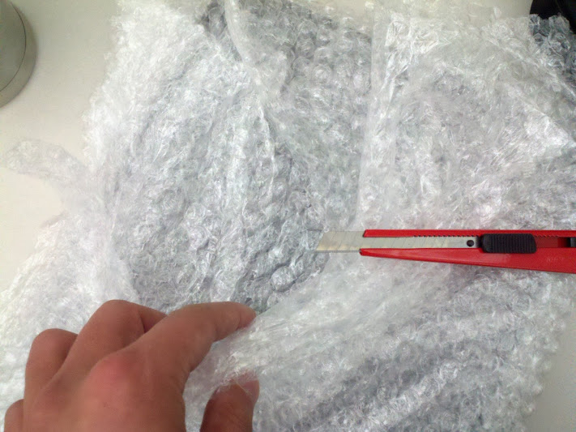

쇼핑 - 현대의 수렵
22/02/2012
현대의 쇼핑이란 고대의 수렵에 상응한다 라는 주장을 들은 적 있다.
긴 시간을 들여 세심히 목표물을 기다리고 결국 결정을 내림으로써 인간 내면에 잠재된 근원적인 약탈과 소유욕을 극적으로 충족시킨다는 내용이었는데, 뭐 물론 이 이야기는 쇼핑 중독이 되는 이유로 갖다 붙인 것 같기도 하다.
긴 시간을 들여 세심히 목표물을 기다리고 결국 결정을 내림으로써 인간 내면에 잠재된 근원적인 약탈과 소유욕을 극적으로 충족시킨다는 내용이었는데, 뭐 물론 이 이야기는 쇼핑 중독이 되는 이유로 갖다 붙인 것 같기도 하다.
이사를 위해 뽁뽁이를 칼로 헤쳐보다 보니 마치 원시 부족이 사냥물을 잡은 후에 가죽을 벗기는 것이랑 다를 바 없다는 생각이 든다.
